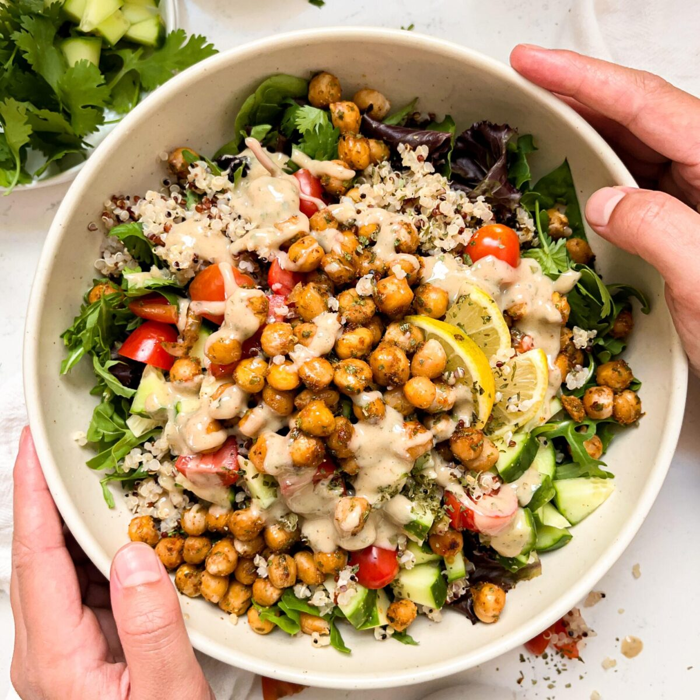

Recipe of the Day
Roasted Chickpea & Quinoa Bowl
Culinary Therapeutics™ offers a dynamic suite of educational products at the intersection of culinary arts, nutrition science, agriculture, and healthcare. Our mission is to advance therapeutic food and nutrition knowledge for individuals, professionals, and organizations.
We promote food as a wellness, performance, and sustainable living foundation. While our name reflects a focus on culinary approaches in health-oriented contexts, we do not diagnose, treat, or cure medical conditions.
We empower individuals and organizations by uniting the art and science of food, nutrition, and culinary practice. Our offerings include evidence-based instruction, immersive workshops, and curated resources.
What We Provide
- Classes, seminars, conferences, forums, retreats, and workshops in culinary arts, food, agriculture, wine, nutrition, and health care.
- Educational content delivered through online platforms, video instruction, and print materials.
- Specialized training in culinary techniques, nutritional assessment and intervention, and health coaching.
- Resources for healthcare providers to integrate food-based interventions in clinical practice.